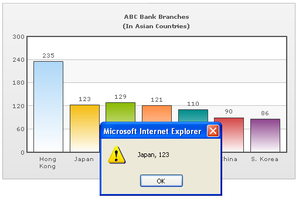

Using JavaScript functions as links |
|
Instead of using simple links, you can also set JavaScript links using FusionCharts. That is, you can invoke a JavaScript function present in the same page (in which the chart is present) when the end viewer clicks a data element on the chart. In FusionCharts v3.0.7, we have introduced a new way to accomplish this. Now, you just need to place the name of the JavaScript function preceded by "j-" as shown below: <set label='USA' value='235' link="j-myJS('USA',235)"/> Just place the function name with proper parameters after the j- notation. The function will be evaluated as a standard JavaScript function. Any number of parameters can be passed to this function. However, you cannot use a semi-colon within the declaration. Since FusionCharts v3.1, we have also introduced the following new syntax: <set label='USA' value='235' link="j-myJS-USA,235"/> The classical function-call notation of JavaScript has been replaced by following expression In the above code, myJS refers to a custom JavaScript function present in the HTML page that embeds this chart. You can also specify any number of parameters for this function. When you now click the data item (column, pie, bar etc.) for this particular data, myJS function would be invoked and 'USA, 235' would be passed to the function as the function parameter. Here, we've passed the data label and value just for demonstration purposes. In actual charts, you can pass identifier numbers or strings to each data. When the user clicks on the link, these identifiers can be sent back to your JavaScript function for further actions (like loading detailed data for that identifier using AJAX or anything - the possibilities are endless). Let's quickly put up an example for this kind of links. We'll create a simple 2D Column chart indicating "ABC Bank Branches" in Asia. Each column when clicked would pass its label and value to our custom JavaScript function myJS, which (for the sake of demonstration) would just write it out in an alert box. We create JSExample.html for this example in DrillDown folder. It contains the following HTML code: |
| <html> <head> <title>JavaScript Link Example</title> <script language="JavaScript" src="../FusionCharts/FusionCharts.js"></script> <SCRIPT LANGUAGE="JavaScript"> <!-- function myJS(myVar){ window.alert(myVar); } //--> </SCRIPT> </head> <body bgcolor="#ffffff"> |
Here, we've a defined a function myJS which will respond to the clicks generated from the chart. Additionally, it's important to set the registerWithJS attribute in constructor to 1 (the last attribute in the line which initializes a FusionCharts chart in the page). And now, JSExample.xml looks as under: |
| <chart caption='ABC Bank Branches' subCaption='(In
Asian Countries)' yaxislabel='Branches' xaxislabel='Country'> <set label='Hong Kong' value='235' link='j-myJS-Hong Kong, 235'/> <set label='Japan' value='123' link='j-myJS-Japan, 123'/> <set label='Singapore' value='129' link='j-myJS-Singapore, 129'/> <set label='Malaysia' value='121' link='j-myJS-Malaysia, 121'/> <set label='Taiwan' value='110' link='j-myJS-Taiwan, 110'/> <set label='China' value='90' link='j-myJS-China, 90'/> <set label='S. Korea' value='86' link='j-myJS-S. Korea, 86'/> </chart> |
| As you can see above, for each data item, we've
defined a JavaScript link that points to the custom function myJS.
To this function, we're passing the name and value of the data item.
When you view the chart and click on a column, you'll see something like under: |
|  |
| Note: The above mentioned way of using JavaScript functions as links is supported by all the major browsers. |
| Deprecated way of Using JavaScript functions as links |
|
JavaScript functions can also be invoked using a slightly different way. We placed the name of JavaScript function(s) preceded by "JavaScript:", as shown below: <set label='USA' value='235' link="JavaScript:myJS('USA, 235')"/> |
| Note: In some cases Internet Explorer fails to invoke JavaScript functions as links using this method. This method is deprecated since FusionCharts v3.0.7. |
| Using this method, the JSExample.xml would look like this: |
| <chart caption='ABC Bank Branches' subCaption='(In
Asian Countries)' yaxislabel='Branches' xaxislabel='Country'> <set label='Hong Kong' value='235' link="JavaScript:myJS('Hong Kong, 235');"/> <set label='Japan' value='123' link="JavaScript:myJS('Japan, 123');"/> <set label='Singapore' value='129' link="JavaScript:myJS('Singapore, 129');"/> <set label='Malaysia' value='121' link="JavaScript:myJS('Malaysia, 121');"/> <set label='Taiwan' value='110' link="JavaScript:myJS('Taiwan, 110');"/> <set label='China' value='90' link="JavaScript:myJS('China, 90');"/> <set label='S. Korea' value='86' link="JavaScript:myJS('S. Korea, 86');"/> </chart> |
| As you can see above, for each data item, we used JavaScript:, instead of j-, which points to the custom function myJS. This is the only difference with the new procedure. Apart from this, everything else is the same. |